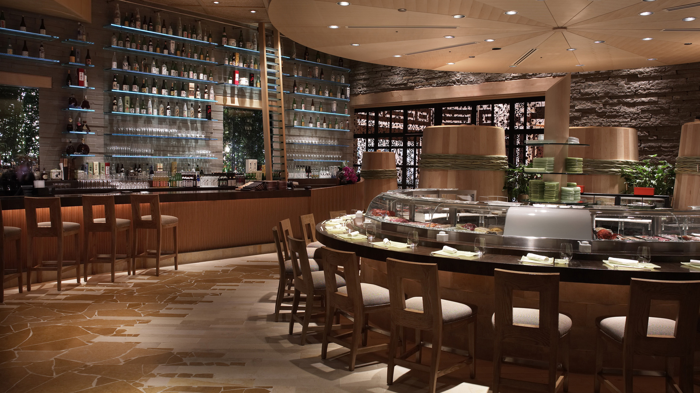

Акцент на барную стойку
Барная стойка – это почти сакральное местодля любого ресторана или кафе. Ключом к пониманию необычайной важности ее правильного дизайнерского оформления является доля годовой прибыли от работы барной стойки в доходах всего заведения.
В чрезвычайно динамично развивающемся сегменте HoReCa среди ресторанов, кафе, баров идет ожесточенная борьба за оригинальность в оформлении интерьеров.
Результат не совсем удачных экспериментов дизайнеров интерьера ресторана сказывается на желании клиента проводить время за барной стойкой. Доходит до смешного, когда на барных стульях просто невозможно сидеть. Так в погоне за нетривиальным интерьером совершенно утрачивается понимание утилитарности тех или иных решений. И здесь становятся очевидными экономические потери заведения. Именно барная стойка способна принести ресторану четверть годовой прибыли, а ночному клубу – более половины годового дохода.
Барная стойка – это смысловой и визуальный центр интерьера всего заведения. Он находится в центре внимания посетителей и требования к каждой детали оформления бара чрезвычайно высоки. В его дизайне должна концентрировано отражаться концепция ресторана или клуба. Но помимо исключительно важного эстетического аспекта, дизайнерам интерьера необходимо учитывать и целый ряд технологических нюансов. Ведь бар – это не только особая зона отдыха, с точки зрения гостя, но так же и рабочее место администратора и бармена. Идеальный дизайн барной стойки предполагает грамотное соотношение трех составляющих: удобства для клиентов, внешней эстетичности и соответствия технологическим требованиям.
Концепция бара в дизайне ресторана основываются на принципах функциональности и эргономики, от которых напрямую будет зависеть поток клиентов, качество их обслуживания, а, следовательно, и рентабельность. Стойка, как место работы администратора и бармена, это совершенно особая система хранения, с огромным количеством ниш, отсеков, полок и пр. инвентаря. Правильная внутренняя организация барной стойки определяет скорость и качество обслуживания.
В оформлении стоек фантазия дизайнеров интерьера не знает границ. Но самые разные стилевые направления, от элегантной американской классики, до брутального лофта, аналогичным образом подчинены удобству клиентов и работников заведения.
Выбор отделочных материалов для зоны бара определяется общим стилем интерьера. Безупречный и наиболее частый выбор ресторанов европейской кухни с классическим интерьером – благородное натуральное дерево. Его текстура, цвет и энергетика, создают особую атмосферу и располагают клиента к продолжительному отдыху.
Заведения фьюжн-кухни с ультрасовременными интерьерами отдают предпочтение синтетическим материалам: искусственному камню, акрилу, металлу. Они отличаются повышенной износостойкостью, более пластичны и позволяют создавать стойки самых разнообразных форм.